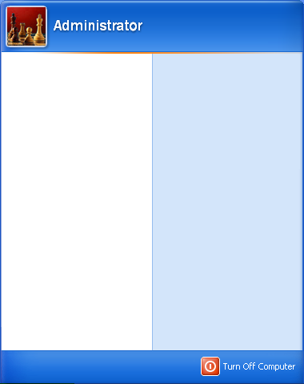

About.txt
Projects.txt
Skills.txt
Repository Internet Shortcut
Contact.txt
Credits.txt
Download CV Internet Shortcut
About.txt - Notepad
*** CLASSIFIED INFORMATION - INCINERATE AFTER FINDING *** or do not. They are watching anyway. Name is Sergei Sedykh. I'm a #GET_AGE year old self-educated Programmer and Web/Software Developer from Kursk, Russia. I did science in past - physics to be precise. Conferences, research projects, studies - all of that. But failed to invent how to synthesize food out of air and had to start doing real jobs. Nowadays, I pursue Web and Software development being focused on looking for my first job in this field. If you're interested I am open to discuss any opportunities. My email can be found in Contact.txt. Also, you can check out my CV by clicking once on corresponding icon on desktop.
Projects.txt - Notepad
****************** C# ****************** Design Patterns using .NET Link: https://github.com/wlfhrtd/DesignPatterns Description: Currently working on it, haven't decided yet - should it be full-blown manual or just handbook. At this moment project contains code examples for understanding of design patterns. Used in another project. .NET HttpClient demo Link: https://github.com/wlfhrtd/HttpClient-abstraction-demo Description: Demo project of working with .NET Http Client abstraction consuming API (also included). Used: AspNetCore.Http.Extensions AspNetCore.JsonPatch AutoMapper Marvin.StreamExtensions Moq Newtonsoft.Json Swashbuckle xunit NSwagStudio Data Validation in ASP.NET Link: https://github.com/wlfhrtd/ASP.NET-Data-Validation Description: Data validation approaches available in ASP.NET. Used: FluentValidation.AspNetCore ASP.NET MVC demo Link: https://github.com/wlfhrtd/ASP.NET-MVC-demo Description: Web application based on ASP.NET MVC demonstrating available in framework techniques (not all of course) like TagHelpers, Areas, ViewComponents etc. Used: LibraryManager LigerShark.WebOptimizer Serilog SqlClient ADO.NET demo Link: https://github.com/wlfhrtd/ADO.NET-demo Description: 'Showcase' of ADO.NET data access technology from .NET Framework. Used: Npgsql AutoLot project Link: https://github.com/wlfhrtd/AutoLot Description: Introduction to ASP.NET provided by Troelsen A. with "Pro C# 9 with .NET 5 (10th edition)". Used: AutoMapper EntityFrameworkCore LibraryManager Serilog Swashbuckle WebOptimizer ****************** C++ ****************** libxml2 wrapper Link: https://github.com/wlfhrtd/libxml2_wrapper Description: Application to extract data encased between html tags. Used: libiconv libxml2 HTML data retriever Link: https://github.com/wlfhrtd/html_tags_parser Description: Application to extract data encased between html tags using regular expressions and replace functions. Used: regex ****************** PHP ****************** Sales CMS for some shop Link: https://github.com/wlfhrtd/not_project Preview link: https://obscure-chamber-99444.herokuapp.com/ Description: Based on ordinary trading software but became sandbox for Symfony framework. Used: php 8.1 symfony 6.1 doctrine orm 2.12 easyadmin 4 liip/imagine phpoffice/phpspreadsheet stof/doctrine-extensions symfony/amqp-messenger symfony/doctrine-messenger symfony/lock symfony/messenger symfony/notifier symfony/telegram-notifier symfony/security symfony/twig symfony/validator tetranz/select2entity vich/uploader doctrine/doctrine-fixtures symfony/maker-bundle symfony/web-profiler File Iterator Link: https://github.com/wlfhrtd/large_file_iterator Description: PHP fgets(), fread(), fgetcsv() functions wrapper ****************** Java Android ****************** Assistant organizer app Link: https://github.com/wlfhrtd/assistant Description: Organizer application using Calendar View and Work Manager. Used: Navigation component Room database component WorkManager api
Skills.txt - Notepad
C# (native, .NET) Java Android PHP (native, Symfony) JavaScript (native, jQuery) C++ (native, STL) Web Development OOP model
Contact.txt - Notepad
strmbld@gmail.com
Credits.txt - Notepad
Site made by bunch of cats running over keyboard. Using JQuery Terminal Emulator by Jakub Jankiewicz (https://terminal.jcubic.pl). Using jQuery-Desktop by Nathan Smith (https://desktop.sonspring.com).

About.txt - Notepad
Projects.txt - Notepad
Skills.txt - Notepad
Contact.txt - Notepad
Credits.txt - Notepad